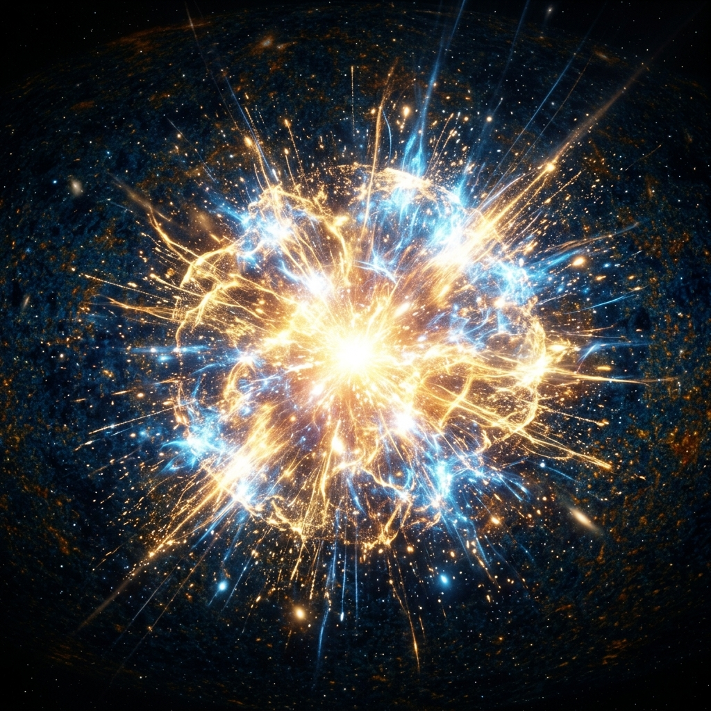
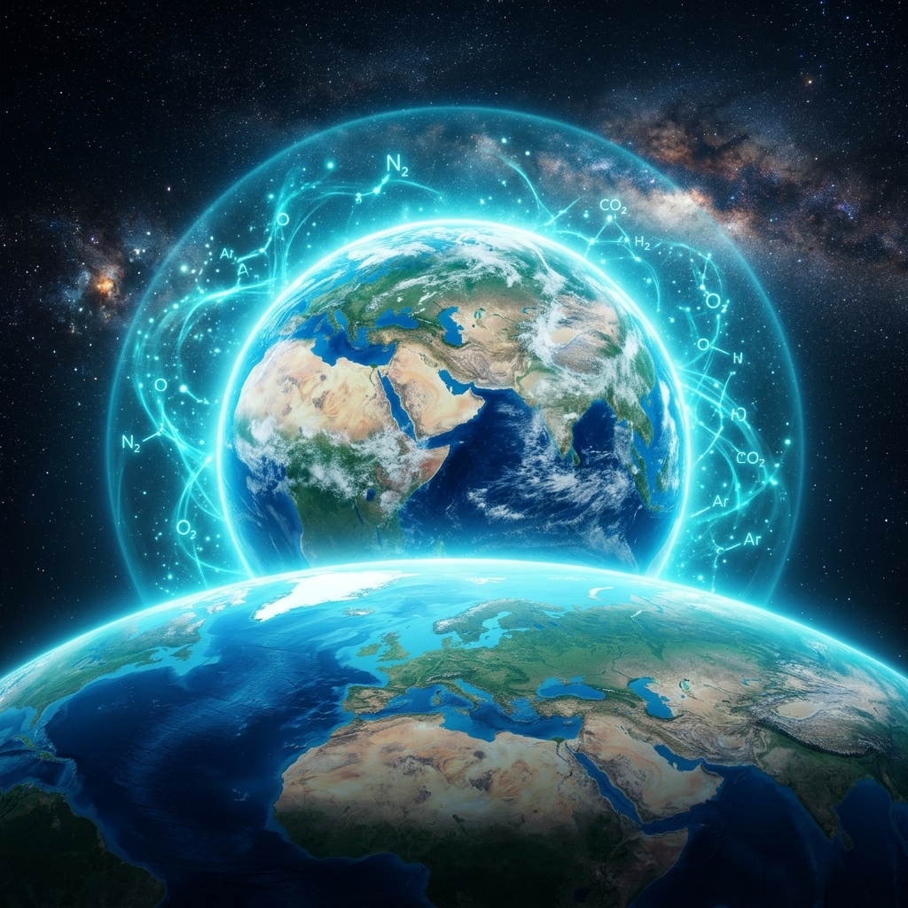
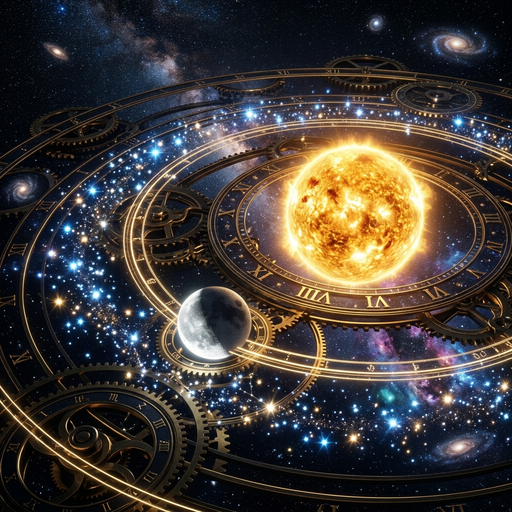
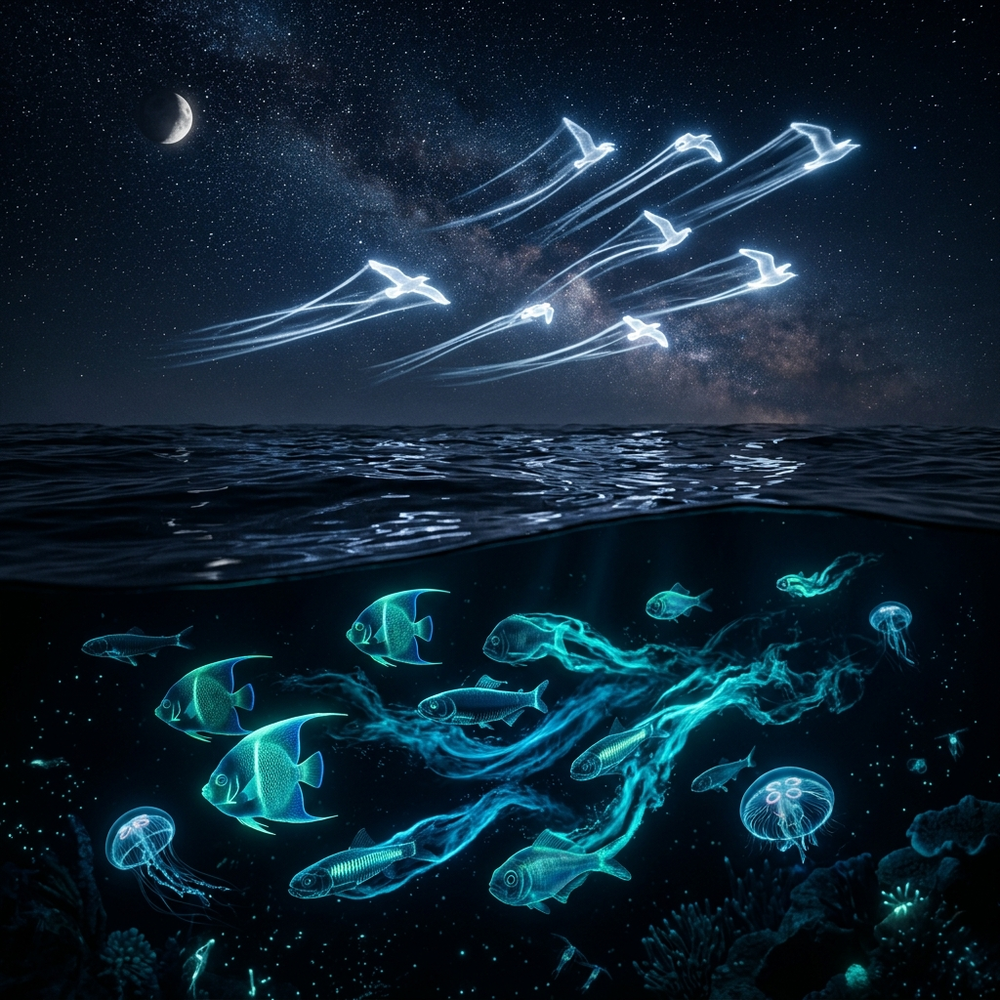
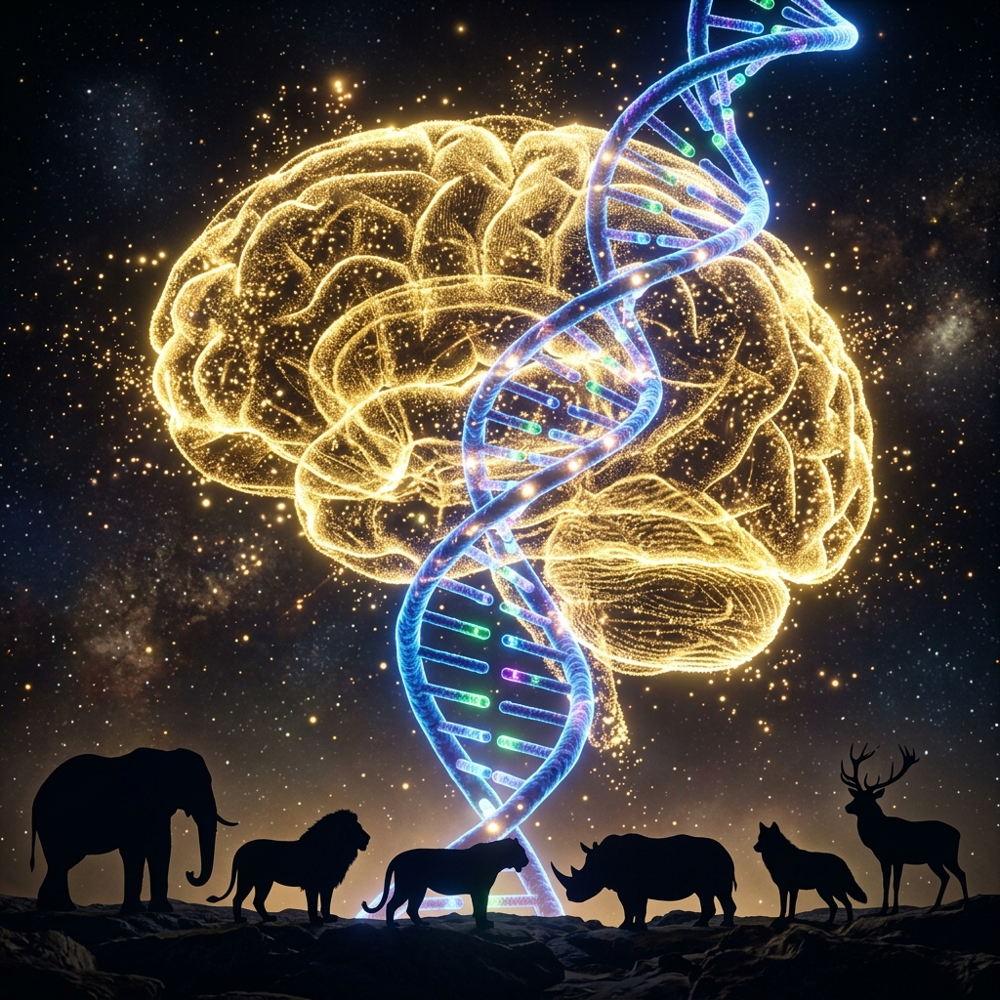
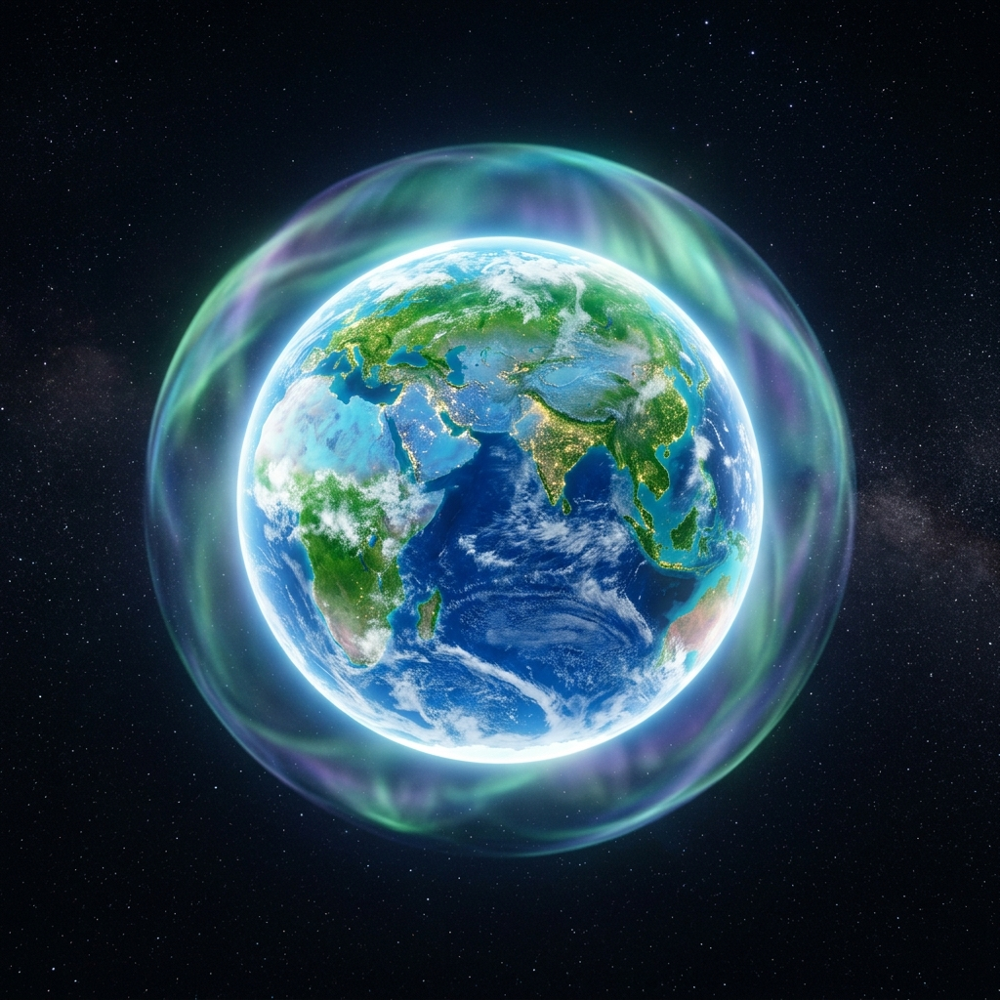

INSTITUTO ADVENTISTA
INSTITUTO ADVENTISTA
INSTITUTO ADVENTISTA
INSTITUTO ADVENTISTA
La creación descrita en el Génesis es el registro histórico del poder de Dios dando forma a nuestro mundo. Aquí contemplamos cómo la palabra del Creador estableció con orden y perfección cada una de las leyes y maravillas que hoy estudia la ciencia.
"Sea la luz". Antes de que existiera la materia como la conocemos, se establecieron la energía y el espectro electromagnético. La física moderna confirma que el universo tuvo un principio absoluto, lleno de luz y energía pura.

La creación de la atmósfera. La separación de las aguas estableció el ciclo hidrológico y la composición exacta de gases (nitrógeno, oxígeno, dióxido de carbono) necesarios para proteger la Tierra y sostener la vida futura.

La formación de las placas tectónicas y el surgimiento de los continentes prepararon el escenario para la primera explosión de vida: las plantas. Aquí vemos la maravilla de la fotosíntesis, el primer sistema de energía solar del mundo.
El sol, la luna y las estrellas asumen su función de "relojes cósmicos". Su gravedad y posición perfecta mantienen la órbita de la Tierra estable, generando las estaciones del año indispensables para la ecología.

Los primeros seres conscientes. Desde la increíble hidrodinámica de los peces hasta los complejos sistemas de navegación por ecolocalización de los mamíferos marinos y la aerodinámica perfecta de las aves.

La obra cumbre. Aparece el ADN humano, un código de información de una complejidad asombrosa, junto con el cerebro humano, la estructura más compleja del universo conocido, diseñado para razonar y conocer a su Creador.

El sistema está completo y en equilibrio perfecto. El descanso no implica agotamiento, sino la celebración de una obra terminada. Nos enseña el principio de la conservación y el cuidado responsable del medio ambiente.
